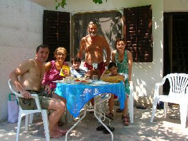
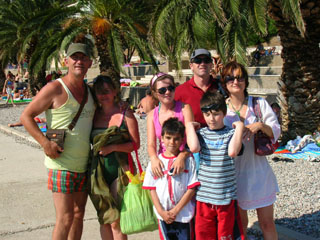
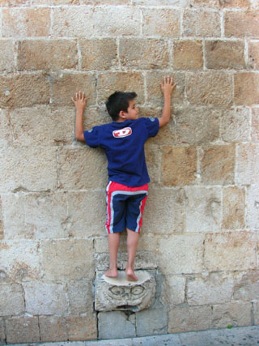
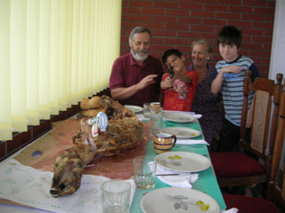
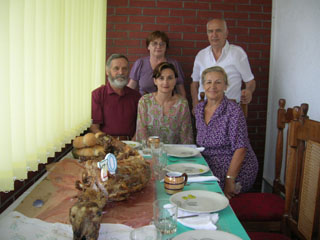
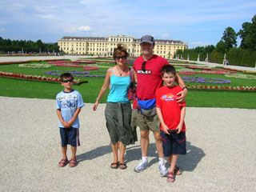
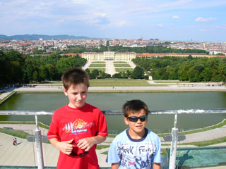
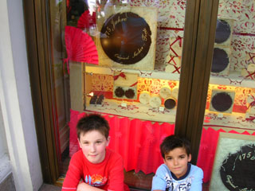

Croatia, Bosnia and Austria
August 2007
In summer we took off for one of our Euro-marathons, driving down to the beach house in Croatia. After a week of sun and sea, we went inland to Alisa's home town, where Izet celebrated his 70th bridthday with a feast. On the way home we had a glorious day in Vienna.

under the vines at the beach house


Harry masters the balancing stone of Stradun after hundreds of grown-ups fail

Is it a lamb or a dinosaur?


The palace of Schönbrunn, Vienna

Amazing views for those fit enough to walk up

the Hotel Sacher, famous for Sachertorte